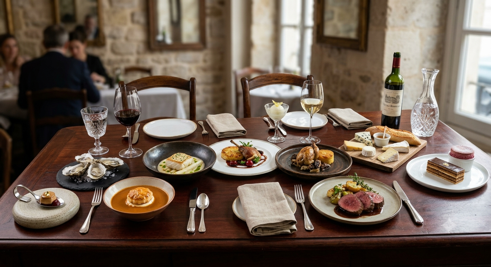
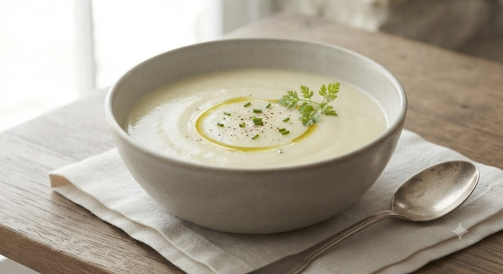
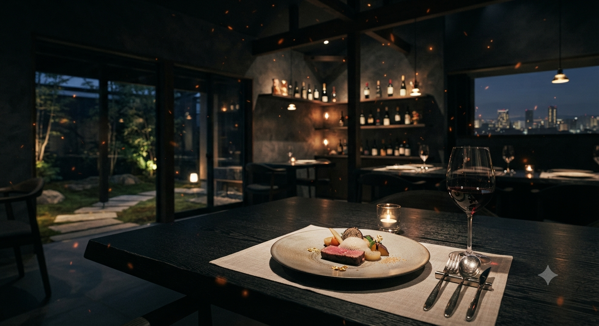
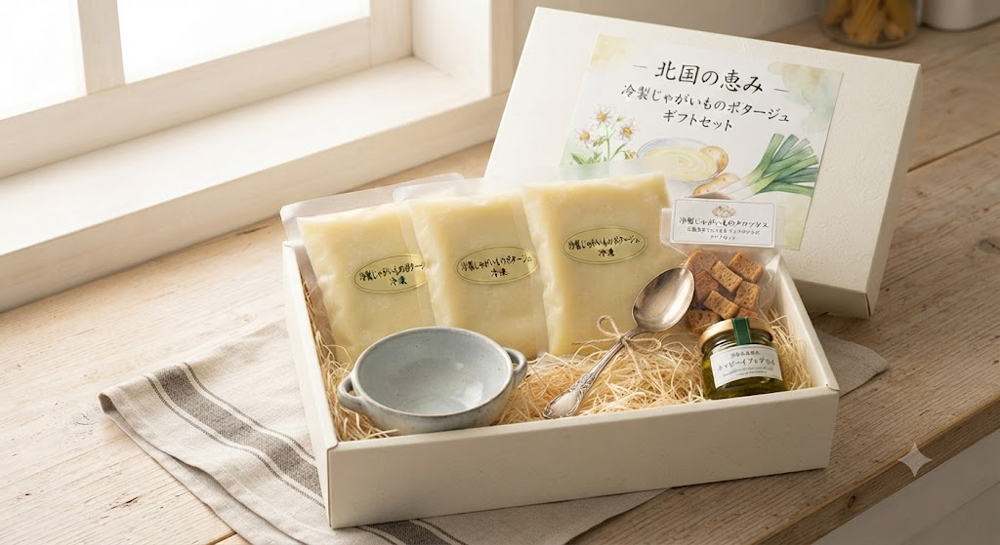

至高の一雫「じゃがいもの冷製ポタージュ」
SENDAI / KUNIMIGAOKA
リピーター様が「これだけで大満足」と絶賛する前菜。
その中でも不動の人気を誇る
「じゃがいもの冷製ポタージュ」をディナー時に無料でご提供いたします。
※1日5組様限定 / 季節により内容が変更となる場合がございます

記憶に刻まれる濃密な甘み。
Arumのスペシャリテ、じゃがいもの冷製ポタージュ。土の香りを残しつつ、シルクのような滑らかさにまで磨き上げたその味わいは、まさに「飲む宝石」。
前菜盛り合わせの一皿に、驚きと感動を。シェフ小野寺が最も大切にしているのは、素材が持つ「本来の甘み」を引き出す温度とタイミングです。

窓の向こうに広がるのは、宝石を散りばめたような仙台の夜景。
あるいは、心洗われるような青空と遠くの海。
白木を基調とした落ち着いた空間で、日常を脱ぎ捨てる時間を。
「前菜がこんな組み合わせでも美味しいんだぁと感動。新玉ねぎのスープも甘く、自分でも作りたくなるほど。郊外にいいお店を見つけました。」
30代 女性 / ランチ利用
「2回目ですが、この料理でこの値段は安すぎます。駐車場が少し狭くて急階段ですが、店内は見晴らしが良くて自然を感じて食事出来ます。」
40代 男性 / 記念日利用
「景色もご馳走の一部です。デートや記念日など、大切なシチュエーションに訪れたい、と思えるお店です。夜景も素敵だろうなあ。」
20代 女性 / デート利用

クチコミで「毎日でも飲みたい」「自分でも作りたくなるほど濃厚」と大絶賛をいただくArumのスペシャリテ、「じゃがいもの冷製ポタージュ」。
「この味を遠方に住む家族にも贈りたい」「特別な記念日に自宅の食卓で再現したい」という温かいご要望にお応えし、ついにオンラインギフトストアを立ち上げます。
【公式SNSフォロワー様限定】
オープン時に、優先案内と、オンラインストアで使える「10%OFF先行クーポンコード」を限定配布いたします。
| Address | 〒989-3201 宮城県仙台市青葉区国見ケ丘4丁目31-21 2F |
|---|---|
| Phone | 050-3556-5564 |
| Holiday | 月曜日・火曜日 |
| Parking | 5台完備 |
当店舗は高台に位置し絶景をお楽しみいただけますが、入口の階段が少々急になっております。お足元に十分ご注意ください。また、駐車場もスペースに限りがあるため、乗り合わせでのご協力をお願いしております。
Station
JR国見駅より徒歩20分
市参バス「霊天前」徒歩1分